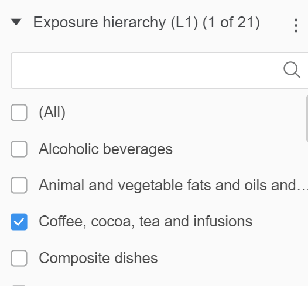

Exercise 10. Exposure assessment from databases
MVEN10 Risk Assessment in Environment and Public Health
Exercise overview
Do in groups of 1-3
Background
Exposure assessment uses data on food consumption and drinking water, analytical data on the presence of substances in food and statistics of behaviours and lifestyles of populations of interest.
Data from studies and surveys have been collected into data bases that are available to be used in risk assessment.
Purpose
To explore some data bases to support exposure assessment
To discuss how to derive exposure estimates
Content
Duration
45 minutes
Reporting
Be prepared to report back at the end of the exercise.
References
In text
Exposure facts
Go to the website at JRC and read about the Exposure facts
What does JRC stands for?
What type of information are there in the ExpoFacts Database?
The exposure factors handbook
The US EPA Exposure factors handbook contains information for exposure assessment.
Go to chapter 5. Soil and dust ingestion and open the update from 2017
What type of information is found in this chapter and what can it be used for?
Discuss the difference between these three terms
Soil ingestion is the consumption of soil. This may result from various behaviors including, but not limited to, mouthing, contacting dirty hands, eating dropped food, or consuming soil directly.
Soil pica is the recurrent ingestion of unusually high amounts of soil (i.e., on the order of 1,000−5,000 mg/day or more).
Geophagy is the intentional ingestion of earths and is usually associated with cultural practices.
Discuss the difference between soil and dust (see definitions on Page 5-2 [10 in the PDF])
Goto Table 5-3 and estract a high exposure to Aluminium via soil and dust combined for a child between 1 to 4 years old.
Discuss if high exposure should be evaluated on the 95th Percentile or the Maximum.
Be prepared to report back.
Dietary Exposure (DietEx) tool
The Dietary Exposure DietEx tool is a user-friendly tool for estimating chronic dietary exposure to substances present in food (e.g. intentionally added or naturally present chemicals, contaminants, proteins, novel food ingredients).
The DietEx tool is currently unavailable due to ongoing validation by EFSA. So we skip this.
The EFSA Comprehensive European Food Consumption Database
The Comprehensive Food Consumption Database is a source of information on food consumption across the European Union (EU).
Goto the site for the food consumption database.
Enter the foodex2-level-1 window
Filter the data according to Exposure hierarchy L1 - by deselecting (All) and then selecting Coffee, cocoa, tea and infusions only

Discuss the difference between the four categories of data?
Expand the data sheet for Chronic Food Consumption Grams per kilogram of body weight per day (g/kg bw per day) - Consumers only
Your task is now to assess the consumption for a high consumer of Coffee, cocoa, tea and infusions for two population groups in the EU:
- Adult and pregnant women
- Discuss how to define a high consumer and how to derive the estimate. You are welcome to ask for advice. Be prepared to report back your suggestion and results.